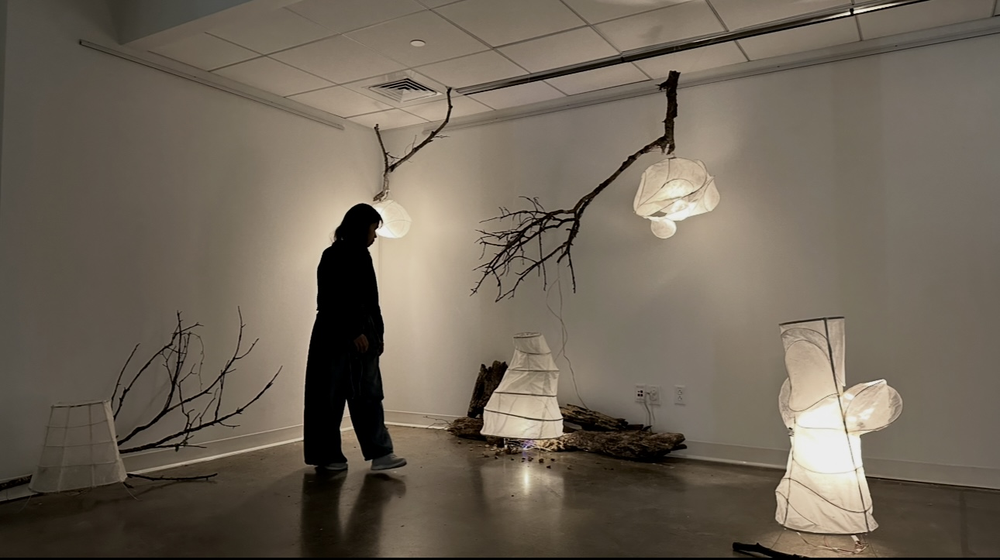
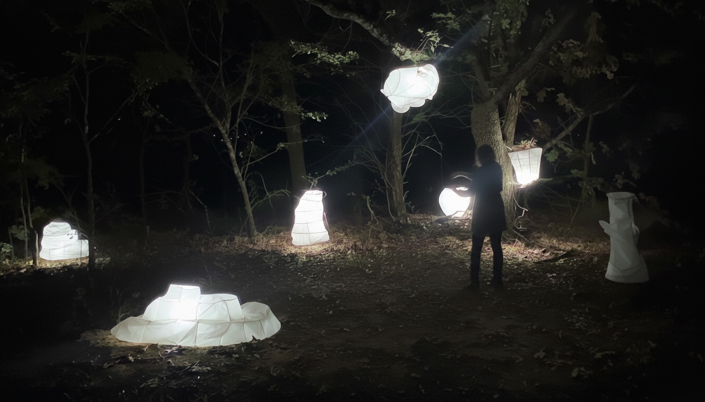

Longing
Light and Sound Interactive, Installation & Performance.
Longing is an interactive light and sound installation that draws its essence from Vietnamese landscapes and cultural memory. This piece delves into the profound connection between nature and self, memory and place, evoking a deep sense of belonging and ancestral presence. The performance is the newest iteration of Longing, experimenting with the relationship between human movement, nature, and technology.
Concept & Experience
The title Longing is a poignant play on words, referencing the Vietnamese term "Lồng" from "Đèn Lồng" (lantern lights). Inspired by the serene beauty of rice fields, the vastness of coastlines, and the rhythmic force of monsoons, Longing invites participants into a meditative space for reflection. Through its evocative elements, the installation aims to awaken a sense of cultural heritage and the universal human desire for connection. The interactive performance aspect further immerses the audience, allowing their movements to influence and become part of the unfolding experience, blurring the lines between observer and participant.
Project Details
Project Type: Interactive Light & Sound Installation, Kinetic Performance, Lantern Sculpture
Medium: Light and sound by PIR Motion Sensor, (Arduino), Lantern Sculpture, Live Performance
Team members: Baotran Vo, Diamond Nguyen, and Kristen Duong


Exhibition History
- Midnight in Nowhere: Rite of Spring — March 2025
- AHT Gallery — May 2025
- Solo Show — Live Performance — May 2025